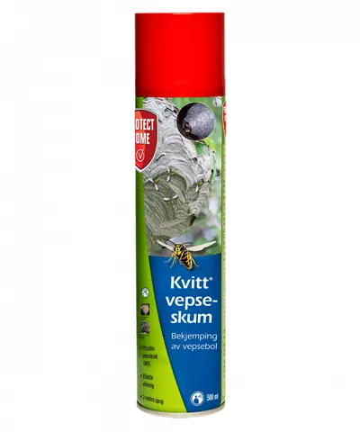
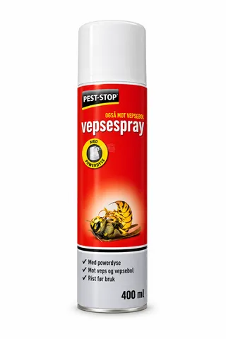
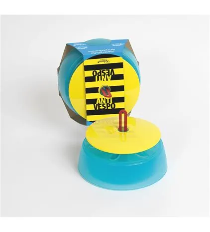
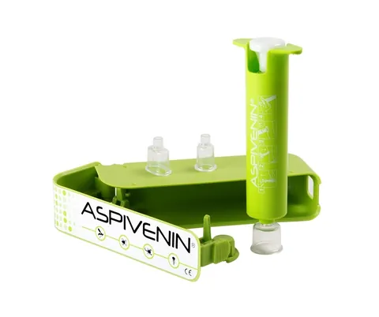

Vepsebolet du ser i august, på størrelse med en fotball og med en strøm av veps inn og ut, startet som et bol på størrelse med en valnøtt i mai. Bygget av én dronning. Det er hele hemmeligheten bak vepsesesongen: jo tidligere du oppdager bolet, jo enklere er det å bli kvitt. Og jo senere på høsten det er, jo mer kan du bare vente.
Se forskjellen
Ett år, ett bol
På våre breddegrader er alle stikkevepskolonier ettårige. Bare unge, befruktede dronninger overvintrer – i hule trær, jordhull, vedstabler eller kroker på loftet. De kommer fram i april. Hver dronning finner et sted og begynner å bygge et nytt bol av papiraktig materiale laget av tygde trefibre. Gamle bol brukes aldri på nytt.
- April–mai: dronningen bygger bolet alene og aler opp de første arbeiderne.
- Juni: arbeiderne overtar driften. Dronningen legger egg – opptil 12 000 i løpet av en sommer.
- Juli–august: bolet vokser raskt og kan bli større enn en fotball. Arbeiderne lever bare 2–3 uker, men det klekkes hele tiden nye.
- Sensommeren: nye dronninger og hanner klekkes og parer seg. Arbeiderne leter etter søt mat og blir plagsomme rundt mat og drikke ute.
- Høsten: kolonien dør ut når frostnettene kommer.
Ifølge FHIs statistikk utførte skadedyrfirmaene rundt 1 900 bekjempelser av stikkeveps i 2025, noe over snittet. I 2024 og 2025 skjedde over to tredeler av dem i juli og august.
Kjenn igjen stikkevepsen
Stikkeveps har glatt bakkropp uten hår, med svarte og gule ringer. Vingene brettes på langs og ser smale ut i hvile. Arbeiderne er 11–19 millimeter lange. Hunner og arbeidere har brodd og kan stikke flere ganger, i motsetning til honningbier. Er du usikker på om det er veps, humle eller bie, se Humler eller bier i veggen og stikkeveps i leksikonet. Den store kjempetrevepsen ser skremmende ut, men stikker ikke.
Hvor bygger vepsene bol?
- under takskjegg og takutspring
- på loft og i boder
- i hulrom i vegger, bak kledning og i luftekanaler
- i busker, hekker og hule trær
- i hulrom i bakken, for eksempel gamle musereir
Et bol du ser, er lett å vurdere. Et bol du ikke ser, avslører seg ved at veps flyr jevnlig inn og ut av en sprekk, en ventil eller et hull i bakken.
Slik fjerner du et lite bol
- Vent til kvelden eller natten, når vepsene er i bolet og rolige.
- Kle deg heldekkende: lange ermer, bukser, hansker og gjerne regntøy eller birøkterdrakt, og noe over ansiktet.
- Fritthengende bol kan du tre en tett plastpose over, knyte igjen og legge i fryseren. Små bol kan også støvsuges, og posen fryses etterpå.
- Bol du ikke når, kan behandles med vepseskum eller spray stukket inn i bolet.
- Skjulte bol i vegger og bakken behandles med insektpulver ved åpningen, slik at vepsene drar det med seg inn.
Hold avstand og ikke slå mot bolet. Gjør du det midt på dagen, risikerer du at mange veps angriper samtidig.
Når bør du få hjelp?
- Bolet sitter inne i en vegg, i taket eller i en luftekanal du ikke kommer til.
- Bolet er stort, og det er langt ut i juli eller august.
- Du er allergisk mot vepsestikk – da skal du ikke fjerne bol selv.
- Bolet sitter der barn leker eller folk ferdes mye.
Ikke tett hullet til et bol i veggen mens vepsene er aktive. Da kan de gnage seg inn i huset i stedet.
Forebygg neste år
- Sjekk loft, takutspring og luftekanaler i april og mai, mens bolene er små.
- Sett netting foran åpninger og sprekker som leder inn til loft og hulrom.
- Fjern gamle bol om vinteren, når alle vepsene er døde.
- Om sensommeren: hold søppel lukket og ikke la søtsaker stå ute. Vepsefeller kan redusere plagene rundt uteplassen.
Vepsestikk
De fleste får smerte, rødme og hevelse som går over. Stikk i munn eller hals kan gi hevelse som gjør det vanskelig å puste, og noen få får allergisk sjokk. Ring 113 ved pustebesvær, hevelse i ansikt eller hals, svimmelhet eller utslett over hele kroppen.
Husk at veps også gjør nytte. De spiser mange andre insekter. Et bol langt unna der folk ferdes, kan ofte bare få være til frosten tar det.
Riktig utstyr
Valgt for denne siden · kjøp hos Skadedyrbutikken



Vanlige spørsmål
Forsvinner vepsebolet av seg selv?
Ja. Alle stikkevepskolonier i Norge er ettårige. Kolonien dør ut om høsten når frostnettene kommer, og bolet brukes aldri igjen. Bare unge dronninger overvintrer, og de bygger nye bol neste vår. Gamle bol kan trygt fjernes om vinteren.
Når er det best å fjerne et vepsebol?
Tidlig i sesongen, i mai og juni, mens bolet er på størrelse med en valnøtt eller en appelsin. Gjør det om kvelden eller natten, når vepsene er i bolet og rolige.
Hvordan fjerner jeg et vepsebol selv?
Et lite, fritthengende bol kan du tre en tett plastpose over om kvelden, knyte igjen og legge i fryseren. Bruk heldekkende klær. Bol inne i vegger, tak eller ventiler krever vepseskum eller insektpulver ved åpningen – eller en fagperson.
Hva gjør jeg med vepsebol i veggen?
Ikke tett hullet mens vepsene er aktive – da kan de gnage seg inn i huset i stedet. Bruk vepseskum eller insektpulver ved åpningen om kvelden, eller få hjelp. Tett hullet når bolet er dødt om høsten.
Hva gjør jeg hvis jeg blir stukket?
De fleste får bare smerte og hevelse. Stikk i munn eller hals kan gi pustevansker, og noen få får allergisk sjokk. Ring 113 ved pustebesvær, hevelse i ansikt eller hals, eller svimmelhet. Er du allergisk mot vepsestikk, skal du ikke fjerne bol selv.
Kilder
Artikkelen er skrevet av redaksjonen i Kryp.as og bygger på kildene over. Den erstatter ikke råd fra lege, veterinær eller fagperson.